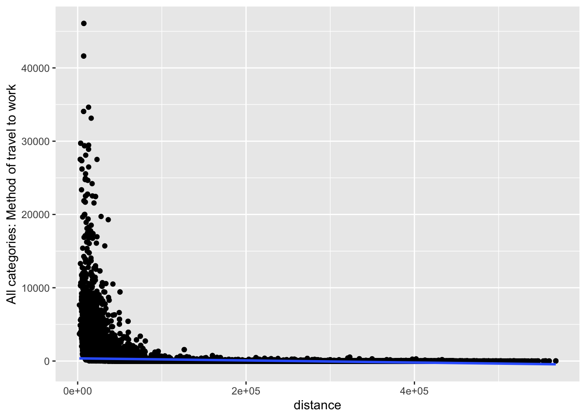

Warning: package 'tidyverse' was built under R version 4.1.3
Warning: package 'ggplot2' was built under R version 4.1.3
Warning: package 'tibble' was built under R version 4.1.3
Warning: package 'tidyr' was built under R version 4.1.3
Warning: package 'readr' was built under R version 4.1.3
Warning: package 'dplyr' was built under R version 4.1.3
library(geojsonio)library(SpatialPosition)
Warning: package 'SpatialPosition' was built under R version 4.1.1
library(stargazer)library(caret)
Warning: package 'caret' was built under R version 4.1.1
library(rprojroot)
Warning: package 'rprojroot' was built under R version 4.1.3
library(kableExtra)library(sf)
Warning: package 'sf' was built under R version 4.1.3
library(caret)knitr::opts_chunk$set(include=TRUE, results='hide', message=FALSE, warning=FALSE)# This is the project pathpath <-find_rstudio_root_file()
Current research
As an introduction, see here some a recent research project we did, which used spatial interaction type of modelling to predict interregional trade flow, which web data [@tranos2022using].
Commuting data and networks
This the same data and the same data preparation we did for the network analysis practical. Please follow the below workflow, which you should already be familiar with. Once the data preperation is done, we will model these commuting flows.
For this tutorial we will use travel to work data from the 2011 UK Census. The data is available online, but it requires an academic login. After you log in, download the WU03UK element, save the .csv on your working directory under a /data directory and unzip it. We will use the:
Location of usual residence and place of work by method of travel to work
for
Census Merged local authority districts in England and Wales, Council areas in Scotland, Local government districts in Northern Ireland.
You might have observe some weird codes (OD0000001, OD0000002, OD0000003 and OD0000004). With some simple Google searching we can find the 2011 Census Origin-Destination Data User Guide, which indicates that these codes do not refer to local authorities:
OD0000001 = Mainly work at or from home
OD0000002 = Offshore installation
OD0000003 = No fixed place
OD0000004 = Outside UK
For the sake of simplicity we will remove these non-geographical nodes.
Now let’s do some clean-up of the commuting data frame. Let’s remind ourselves how the data look like
We are keeping the English and Wales local authorities by keeping the observations with a local authority code starting from E (for England) and W (for Wales).
commuting <- commuting %>%filter(startsWith(`Area of usual residence`, "E") |startsWith(`Area of usual residence`, "W")) %>%filter(startsWith(`Area of workplace`, "E") |startsWith(`Area of workplace`, "W")) %>%glimpse()
We can also see we many rows we dropped with glimpse().
It is very important to distinguish between intra- and inter-local authority flows. In network analysis terms, these are the values we find on the diagonal of an adjacency matrix and refer to the commuting flows within a specific local authority or between different ones. For this exercise we are dropping the intra-local authority flows. Although not used here, we also create a new object with the intra-local authority flows.
commuting.intra <- commuting %>%filter(`Area of usual residence`==`Area of workplace`)commuting <- commuting %>%filter(`Area of usual residence`!=`Area of workplace`) %>%glimpse()
Please note the constant use of glimpse() to keep control of how many observations we have and check if we missed anything.
Also, take a note of the commuting object, which includes multiple types of commuting flows. Therefore, we will build \(3\) different networks:
one for all the commuting flows
one only for train flows
one only for bicycle flows.
commuting.all <- commuting %>%select(`Area of usual residence`,`Area of workplace`,`All categories: Method of travel to work`) %>%rename(o =`Area of usual residence`, # Area of usual residence is annoyinglyd =`Area of workplace`, # long, so I am renaiming theses columnsweight =`All categories: Method of travel to work`)# just FYI this is how you could have achieved the same output using base R# instead of dplyr of the tidyverse ecosystem# commuting.all <- commuting[,1:3]# names(commuting.all)[1] <- "o"# names(commuting.all)[2] <- "d"# names(commuting.all)[3] <- "weight"commuting.train <- commuting %>%select(`Area of usual residence`,`Area of workplace`,`All categories: Method of travel to work`,`Train`) %>%rename(o =`Area of usual residence`,d =`Area of workplace`,weight =`All categories: Method of travel to work`) %>%# The below code drops all the lines with 0 train flows in order to exclude# these edges from the network.filter(Train!=0)commuting.bicycle <- commuting %>%select(`Area of usual residence`,`Area of workplace`,`All categories: Method of travel to work`,`Bicycle`) %>%rename(o =`Area of usual residence`,d =`Area of workplace`,weight =`All categories: Method of travel to work`) %>%# The below code drops all the lines with 0 bicycle flows in order to exclude# these edges from the network.filter(Bicycle!=0)
Unless you know the local authority codes by hard, it might be useful to also add the corresponding local authority names. These can be easily obtained from the ONS. The below code directly downloads a GeoJSON file with the local authorities in England and Wales. If you don’t know what a GeoJSON file is, have a look here. Boundary data can also be obtained by UK Data Service.
For the time being we are only interested in the local authority names and codes. We will use the spatial object later.
Tip: the below code downloads the GeoJSON file over the web. If you want to run the code multiple times, it might be faster to download the file ones, save it on your hard drive and the point this location to st_read().
la <-st_read("https://opendata.arcgis.com/datasets/d54f953d633b45f5a82fdd3c89b4c955_0.geojson")glimpse(la) la.names <-as.data.frame(la) %>%select(cmlad11cd, cmlad11nm) # all we need is the LA names and codes
Spatial interaction modelling
Let’s now move to model these flows. If you remember the basic Gravity model is defined as following:
\[T_{ij} = k \displaystyle \frac{V_i^\lambda M_j^\alpha}{D_{ij}^\beta}\]
And if we take the logarithms of both sides of the equation we can transform the Gravity model to something which looks like a linear model:
The above transformed equation can be estimated as a linear model if we assume that \(y = lnT_{ij}\), \(c = lnk\), \(x_1 = lnV_i\), \(a_1 = \lambda\) etc. Hence, we can use OLS to estimate the following:
This is what is known as the log-linear or log-normal transformation.
There are a number of issues with such an approach though. Most importantly, our dependent variable is not continuous, but instead a discrete, positive variable (there are no flows of -324.56 people!). Therefore we need to employ an appropriate estimator and this is what the Poisson regression does. Briefly, if we exponentiate both sides, the above equation can be written as:
\[T_{ij} = e^{lnk + \lambda lnV_i + \alpha lnM_j - \beta lnD_{ij}}\] The above is in the form of the Poisson regression. So, we are interested in modelling not the mean \(T_{ij}\) drawn from a normally distributed \(T\), but, instead, the mean \(T_{ij}\), which is the average of the all the flows (i.e. counts) between any \(i\) and \(j\). For more details about the Poisson regression have a look at the (Legler and Roback 2019)[https://bookdown.org/roback/bookdown-bysh/ch-poissonreg.html#initial-models]. For this practical we will estimate the commuting flows using both OLS and Poisson regressions.
But before we get into the estimation we need to build a data frame, which includes all the necessary variables. These are the origin-destination flows \(T\) between \(i\) and \(j\), the distance \(dist\) between \(i\) and \(j\) and the characteristics \(V\) and \(M\) of origin \(i\) and destinations \(j\) that we believe push and pull individuals to commute.
# we use the `SpatialPosition` package and the `CreateDistMatrix()` function to# calculate a distance matrix for all local authorities,la.d <-CreateDistMatrix(la, la, longlat = T)# we use as column and row name the local authority codesrownames(la.d) <- la$cmlad11cdcolnames(la.d) <- la$cmlad11cd# This is a matrix of the distances between *all* local authorities. We then use# the function as.data.frame.table() to convert this matrix to a data frame each# line of which represents an origin-destination pair.la.d <-as.data.frame.table(la.d, responseName ="value")glimpse(la.d)
# Please note that the elements of the diagonal are present in this distance matrix.
If you want to check that the distances we are correct, use google maps to calculate the distance between E41000001 (Middlesbrough) and E41000002 (Hartlepool). Remember that the la.d is expressed in meters.
What is missing here? Do you remember the intra-zone commuting flows? E.g. the commuters that live and work in Bristol? We had removed these from the network analysis and visualisation element. Because we don’t have information about the distances of the intra-zone commutes, we will exclude them from this analysis.
What we want to do is to match the data frame with all the distances with the commuting flows data frame. To do that we will (1) create a new data frame for the origin-destination pair and (2) match the two data frames.
Before we perform the match, keep a note of how many observations both data frames have in order to check if we loose any observations during the matching. As you can see the commuting data frame has less observations than the la.d one, which includes all the possible origin-destination pairs.
What does it mean? That for some origin-destination pairs there are no commuting flows, which of course makes sense. We need to include these pairs with \(flow = 0\) in our data though because the lack of commuting flows is not missing data!
commuting.si <-full_join(la.d, commuting, by ="ij.code") %>%glimpse()
# Some variables are repetitive or need name changecommuting.si <- commuting.si %>%rename(i = Var1,j = Var2,distance = value) %>%select(-`Area of usual residence`,-`Area of workplace`) %>%glimpse()
# Let's see if we have any missing valuessapply(commuting.si, function(x) sum(is.na(x)))
i
0
j
0
distance
0
ij.code
0
All categories: Method of travel to work
26682
Work mainly at or from home
26682
Underground, metro, light rail, tram
26682
Train
26682
Bus, minibus or coach
26682
Taxi
26682
Motorcycle, scooter or moped
26682
Driving a car or van
26682
Passenger in a car or van
26682
Bicycle
26682
On foot
26682
Other method of travel to work
26682
There are quite a few. What does it mean? That there are no commuting flows for these origin-destination pairs and,therefore, were excluded from the origin commuting data set we downloaded. So, we are going to replace these \(NAs\) with \(0s\).
Now let’s bring data for some \(i\) and \(j\) characteristics that we believe that affect commuting. I have prepared such a small data set from the census, which includes resident population and working populations as push and pull variables. These data have been obtained by nomis.
data.workplace <-read.csv("https://www.dropbox.com/s/0ym88p8quwaiyau/data_workplace.csv?dl=1")# Dropbox trick: to use in an .Rmd the link that Dropbox provides to share a file# replace dl=0 with dl=1 at the end of the linkdata.resident <-read.csv("https://www.dropbox.com/s/09d7v5cm6ov3ioz/data_resident.csv?dl=1")commuting.si <- commuting.si %>%left_join(data.resident, by =c('i'='Merging.Local.Authority.Code')) %>%left_join(data.workplace, by =c('j'='Merging.Local.Authority.Code'))
Question are there any redundant columns? Can you remove them?
Before we start modelling these flows, let’s plot our variables.
ggplot(commuting.si, aes(x=distance,y=`All categories: Method of travel to work`)) +geom_point() +geom_smooth(method=lm)

ggplot(commuting.si, aes(x=resident,y=`All categories: Method of travel to work`)) +geom_point() +geom_smooth(method=lm)
ggplot(commuting.si, aes(x=workplace,y=`All categories: Method of travel to work`)) +geom_point() +geom_smooth(method=lm)
Question What do you take from these graphs?
Let’s try now to model these flows. We will start with a simple OLS to estimate the above specifications. Please pay attention to the small trick we did. Because there are non-materialised origin-destination pairs (i.e. with 0 flows), we added a small value (\(0.5\)) in the dependent variable. Otherwise we will receive an error as the logarithm of \(0\) is not defined.
ols.model <-lm(log(`All categories: Method of travel to work`+.5) ~log(distance) +log(resident) +log(workplace),data = commuting.si)# To see the model output you can use the summary() function.summary(ols.model)
Call:
lm(formula = log(`All categories: Method of travel to work` +
0.5) ~ log(distance) + log(resident) + log(workplace), data = commuting.si)
Residuals:
Min 1Q Median 3Q Max
-4.2623 -0.7149 -0.0430 0.6429 8.6146
Coefficients:
Estimate Std. Error t value Pr(>|t|)
(Intercept) 7.961526 0.106137 75.01 <2e-16 ***
log(distance) -1.839355 0.004611 -398.87 <2e-16 ***
log(resident) 0.514276 0.005403 95.19 <2e-16 ***
log(workplace) 0.852536 0.005186 164.38 <2e-16 ***
---
Signif. codes: 0 '***' 0.001 '**' 0.01 '*' 0.05 '.' 0.1 ' ' 1
Residual standard error: 1.104 on 115932 degrees of freedom
(4816 observations deleted due to missingness)
Multiple R-squared: 0.6442, Adjusted R-squared: 0.6442
F-statistic: 6.997e+04 on 3 and 115932 DF, p-value: < 2.2e-16
So, the OLS regression estimated the four parameters:
\(lnk = 7.971\)
\(\beta = -1.840\)
\(\lambda = 0.514\)
\(\alpha = -0.852\)
Let’s estimate now our model using a Poisson regression. Given that we don’t take the logarithm of the dependent variable, there is no need to add \(0.5\).
glm.model <-glm((`All categories: Method of travel to work`)~log(distance) +log(resident) +log(workplace),family =poisson(link ="log"), data = commuting.si)summary(glm.model)
Call:
glm(formula = (`All categories: Method of travel to work`) ~
log(distance) + log(resident) + log(workplace), family = poisson(link = "log"),
data = commuting.si)
Deviance Residuals:
Min 1Q Median 3Q Max
-343.27 -4.94 -3.17 -1.82 346.33
Coefficients:
Estimate Std. Error z value Pr(>|z|)
(Intercept) 11.6302968 0.0091305 1273.8 <2e-16 ***
log(distance) -1.8155761 0.0002800 -6483.1 <2e-16 ***
log(resident) 0.3189626 0.0005445 585.8 <2e-16 ***
log(workplace) 0.8202729 0.0004197 1954.4 <2e-16 ***
---
Signif. codes: 0 '***' 0.001 '**' 0.01 '*' 0.05 '.' 0.1 ' ' 1
(Dispersion parameter for poisson family taken to be 1)
Null deviance: 71855219 on 115935 degrees of freedom
Residual deviance: 14140526 on 115932 degrees of freedom
(4816 observations deleted due to missingness)
AIC: 14483130
Number of Fisher Scoring iterations: 6
The following parameter1 have been estimated
\(lnk = 11.635\)
\(\beta = -1.816\)
\(\lambda = 0.319\)
\(\alpha = 0.820\)
As you can see the differences are rather small.
The stargazer package I use below creates elegant regression tables. Replace type = "html" with type = "text" to have be able to read the results using the .Rmd document. the “html” option is useful for when knitting the script to an .html document.
stargazer(ols.model, glm.model, type ="html")
Dependent variable:
log(All categories: Method of travel to work + 0.5)
(All categories: Method of travel to work)
OLS
Poisson
(1)
(2)
log(distance)
-1.839***
-1.816***
(0.005)
(0.0003)
log(resident)
0.514***
0.319***
(0.005)
(0.001)
log(workplace)
0.853***
0.820***
(0.005)
(0.0004)
Constant
7.962***
11.630***
(0.106)
(0.009)
Observations
115,936
115,936
R2
0.644
Adjusted R2
0.644
Log Likelihood
-7,241,561.000
Akaike Inf. Crit.
14,483,130.000
Residual Std. Error
1.104 (df = 115932)
F Statistic
69,973.050*** (df = 3; 115932)
Note:
p<0.1; p<0.05; p<0.01
Question Can you interpret the regression results?
This is not a Machine Learning introduction…
… but maybe a sneak preview of the philosophy behind modern data science approaches to answer computational problems. We are using the caret package to:
split our data into test and training
train a lm()and a glm() model using the training data set
use the estimated models to make out-of-sample predictions using the test data set
plot the results and the relevant metrics and choose the best model.
This is obviously an oversimplification, but it provides a good preview of machine learning frameworks.